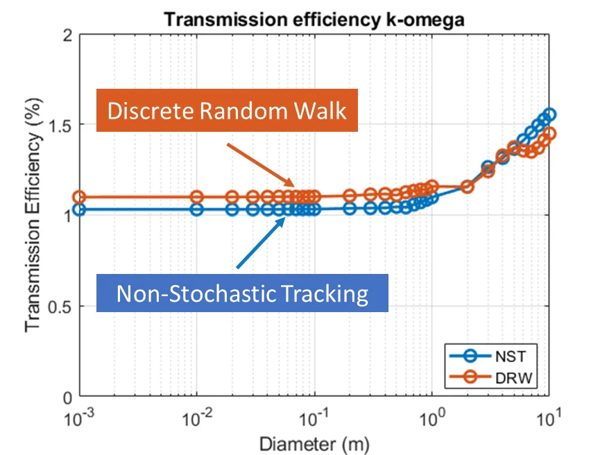
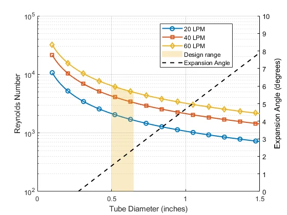
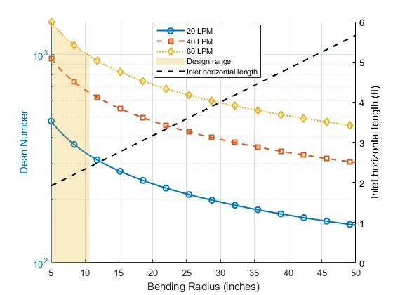

Nagarajan Radhakrishnan
I design aircraft aerosol inlets in CFD, build them, fly them on NASA's WB-57, and test them in the wind tunnel. Ph.D. candidate in Mechanical and Aerospace Engineering at Clarkson University, graduating May 2027.
What sets me apart
Plenty of Ph.D. students have run CFD and used MATLAB. This is how my work differs.
CFD that reaches hardware
Compressible, low-pressure flow modeled in ANSYS Fluent, coupled to a custom turbulent particle-tracking model, then manufactured, flown, and checked against hot-wire data in the lab.
End-to-end measurement
Hot-wire anemometry, flight electronics (Teensy, Arduino), pressure sensing, calibration, and the data pipelines that turn raw flight logs into defensible numbers.
AI-assisted, physics-checked
Daily use of AI coding tools to move faster, with every result validated against first-principles physics and independent measurements.
Projects
Select a project. Click any figure to enlarge it.
NISSA: Nested Inlet for Sampling Stratospheric Aerosol
Sampling aerosol from a fast aircraft means slowing the air down inside an inlet, and that creates turbulence that knocks particles out of the sample. NISSA is a nested design built to avoid that.
- Outer section shrouds the sample so the flow is unaffected by the aircraft's angle of attack.
- Middle section samples isokinetically and slows the flow without adding turbulence.
- Final section sub-samples the slowed flow and turns it into the aircraft plumbing.
The geometry came out of a parametric CFD study (2D and 3D, near-wall resolution y⁺ ≤ 1, k-ω SST and k-ε), integrated with a new turbulent particle-trajectory model developed in our group. The inlet was then manufactured and flown on the WB-57.





Aspiration efficiency of the PurpleAir PA-II-Flex
Low-cost sensors such as the Plantower PMS5003 report PM1, PM2.5 and PM10, but the housing around them decides which particles actually reach the sensor. I modeled the PA-II-Flex enclosure in 3D and computed how many particles of each size make it through at five wind speeds (0.4, 3, 5, 10 and 20 m/s), with and without turbulent dispersion.
- 3D model of the housing and sensor slit, k-ε and k-ω SST turbulence models, Fluent discrete random walk particle tracking.
- Results compared against classical sampling correlations; they do not capture the flow entering this enclosure.
- Presented at AAAR, with field-data validation as the next step.

Interactive: my CFD against published correlations
Fraction of particles crossing into the sensor against particle size (Stokes number), at five wind speeds. Switch the overlay to compare.


Measuring what actually happens inside the inlet
CFD only matters if the real inlet behaves the way the model says. NISSA flew seven research flights on the WB-57 during the SABRE 2025 test campaign, with a miniature hot-wire, absolute and differential pressure taps, and a DPOPS instrument whose size distributions were compared against a balloon sounding of the same air mass.
- Measured in-flight turbulence intensity of about 19% at steady cruise. A ground wind-tunnel test on the manufactured inlet, with the probe at the flight station, reproduced it (17 to 23%), showing the turbulence is a real flow feature and not an instrument artifact.
- Built the flight data-reduction pipeline in MATLAB, and calibrated the Teensy 4.1 flight electronics against a laboratory reference chain.
- Verified that 5 Hz flight sampling preserves mean velocity and turbulence intensity, while being clear that it cannot support spectra.
Detailed flight results are in preparation for publication, so figures are not shown here. I am happy to discuss them directly.
Optical dust-emission monitoring system, IIT Madras (2019 to 2021)
As a Project Associate in the EnERG Lab, I led the design, build and testing of two prototypes of an optical dust-emission monitoring system, from concept to finished hardware. Production drawings followed ASME GD&T practice in Autodesk Inventor, and the prototype was field-tested at India's largest thermal power plant. I also analyzed isokinetic gravimetric sampling data with time-series signal processing in MATLAB and LabVIEW.
How I use AI in research
AI is part of my daily workflow, used with judgment rather than trust.
Speed
AI coding tools (Claude Code, Codex, Claude Cowork) accelerate analysis pipelines, instrument software and figure generation.
Judgment
The tools produce plenty of ideas and plausible answers. I decide what makes sense using fundamental physics and independent measurements.
Limits
I know where these tools help, where they fail, and how to structure the work so errors get caught before they reach a result.
Publications and honors
- Ouimette, J., Arnott, W. P., Laven, P., Whitwell, R., Radhakrishnan, N., Dhaniyala, S., … Volckens, J. (2024). Fundamentals of low-cost aerosol sensor design and operation. Aerosol Science and Technology, 58(1), 1–15. doi:10.1080/02786826.2023.2285935
- Radhakrishnan, N., Dhaniyala, S. Nested Inlet for Sampling Stratospheric Aerosol (NISSA): Design, development, and evaluation. To be submitted to Atmospheric Measurement Techniques, November 2026.
- Radhakrishnan, N., Dhaniyala, S. In-flight turbulence, pressure, and velocity measurements in a nested aircraft inlet for stratospheric aerosol sampling. In preparation.
- Radhakrishnan, N., Dhaniyala, S. Stratospheric aerosol sampling from high-altitude aircraft: In-flight measurements and machine learning analysis of particle transport efficiency. In preparation.
Honors: Best Student Oral Platform Presentation, AAAR (2025); Best Student Poster, AAAR (2022); Best Graduate Oral Presentation and 3rd place project pitch, Clarkson RAPS (2025). NISSA's flights were featured by the NOAA Climate Program Office and Clarkson University.
Contact
Looking for research scientist, postdoctoral and R&D engineering roles in atmospheric instrumentation, aerospace flow measurement and CFD.